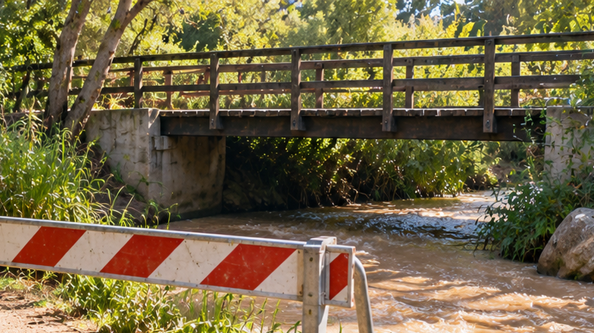

בדיקת מקומות
בדיקת גשר
הגשר נראה רגיל. ומה מתחתיו?

הגשר מעל הנחל
"אתמול עוד עברנו כאן. למה יש מחסום?" שאלה תמר כשהבחינה בסרט האזהרה. בדרך לשמורת טבע נמצא גשר קטן להולכי רגל שחוצה ערוץ נחל. תמר בת האחת־עשרה רגילה לעבור לידו עם משפחתה במסלול טיול מסומן. אחרי כמה ימים של גשם חזק היא רואה שליד הגשר מוצב מחסום זמני.
פקח השמורה מסביר שהגישה לגשר הוגבלה עד להשלמת בדיקה מקצועית. אין לחצות אותו או להתקרב לחלקים שסומנו כמסוכנים.
מה השתנה מתחת
מנקודת התצפית הבטוחה אפשר לראות את המעקה ואת המשטח העליון, אך לא את החלק שמתחת לגשר. הפקח מספר שאחרי זרימת מים חזקה חשוב לבדוק אם התרחש שינוי באזור התמיכות או הקרקע הסמוכה.
תמר מבינה שהמראה החיצוני של המעקה אינו מספיק כדי לדעת מה מצב המבנה כולו.
תמר מצביעה על כתם כהה מתחת למעקה. "אולי זה סדק?" היא שואלת. הפקח משיב שהמרחק והצל אינם מאפשרים לקבוע זאת ומדגיש שרק בדיקה מקצועית יכולה להעריך את מצב הגשר. תמר מגלה שהעיניים עשויות להציע הסברים מהר יותר מכפי שהראיות מאפשרות.
המחסום נשאר במקומו והמשפחה ממשיכה בשביל החלופי. דווקא העובדה שאי אפשר לראות את החלק הנסתר גורמת לתמר לחשוב אילו פרטים היו עוזרים לאנשי המקצוע לתאר את השינוי באופן מדויק.
מקום שקשה להגיע אליו
החלק התחתון של הגשר נמצא מעל הערוץ. הקרקע רטובה, הגישה אינה נוחה ויש אזורים שאין מהם זווית ראייה טובה. לעיתים גם זרימת המים מסתירה את המקום שרוצים לבדוק.
תמר שואלת כיצד אנשי המקצוע יכולים לדעת מה קורה בחלק שאינם רואים מהשביל, בלי לרדת למקום מסוכן.
השוואה לבדיקה קודמת
לפקח יש תיעוד מבדיקה מקצועית קודמת, אך התמונות צולמו בשעת יום אחרת ומנקודות שונות. כדי להבין אם משהו השתנה צריך לוודא שמשווים את אותם חלקי מבנה.
תמר חושבת על סימן קטן בתמונה: אם לא יודעים היכן הוא נמצא ביחס לגשר כולו, אפשר לטעות ולחשוב שמדובר בחלק אחר.
גם תנאי הצילום משתנים
בבוקר יש צל מתחת לגשר, ובצהריים חלק מהאזור מואר יותר. אחרי הגשם המים לעיתים עכורים ואי אפשר לראות דרכם את הקרקע. התצפית תלויה גם במזג האוויר ובתנאי המקום.
תמר מבינה שצילום חד אינו מספיק אם הוא לא מראה את המקום הנכון או אם אי אפשר להבין ממנו קנה מידה.
כשתמר מביטה בתצלום מבדיקה קודמת היא מבחינה שעמוד תמיכה אחד נמצא בקצה התמונה. בצילום חדש, מאותה נקודת תצפית, העמוד נראה במרכז. הצילומים מציגים אותו גשר, אבל ההבדל בזווית מקשה להשוות ביניהם.
"אם שתי תמונות שונות, איך נדע שהגשר השתנה?" היא שואלת. הפקח מסביר שצריך לזהות אותן נקודות מבנה ולתעד גם את תנאי הבדיקה. כך תמר מבינה שצילום אינו רק לחיצה על כפתור: כדי שהמידע יהיה שימושי, צריך לדעת גם מה בדיוק הוא מתעד.
מה ידוע ומה חסר
ידוע היכן נמצא הגשר, מתי נרשמו הגשמים ומדוע הוגבלה הגישה. לא ידוע מה מצב החלקים המוסתרים, האם יש שינוי לעומת הבדיקה הקודמת ומהו היקפו.
תמר מבינה שהחלטה על פתיחת הגשר יכולה להתקבל רק על ידי אנשי מקצוע מוסמכים, לפי בדיקה מלאה.
לפני שממציאים
התלמידים מתמקדים בצורך הרחב: קבלת מידע אמין על מקום קשה לגישה תוך שמירה על מרחק בטוח. הם לא מתכננים כיצד "להכריז שהגשר בטוח".
מה צריך להופיע בתיעוד כדי שיהיה ניתן להשוות לאורך זמן? איך קובעים איזה חלק של המבנה מצולם? ואילו מגבלות של אור, מרחק ותנועה צריך להביא בחשבון?
רמז מעולם החלל
מהנדסי JPL חקרו שימוש בזרועות רובוטיות ובכמה חיישנים לבדיקת משטחים שקשה לאסטרונאוטים להגיע אליהם. גם בתצפית מרחוק דרושים מיקום ברור ותנאי השוואה עקביים. אילו נתונים יעזרו לדעת אם שני צילומים מציגים אותו חלק של גשר?
אחרי הקריאה — בדף הצוות
שוחחו בצוות וענו על סמך המידע שבכתבה. אם חסר מידע, רשמו שאלה להמשך.
- למי אתם רוצים לעזור בסיפור?
- מה הוא מנסה לעשות ומה מקשה עליו?
- מה הוא צריך להיות מסוגל לעשות?
- מה עוד תרצו לברר לפני שתפתחו רעיונות?